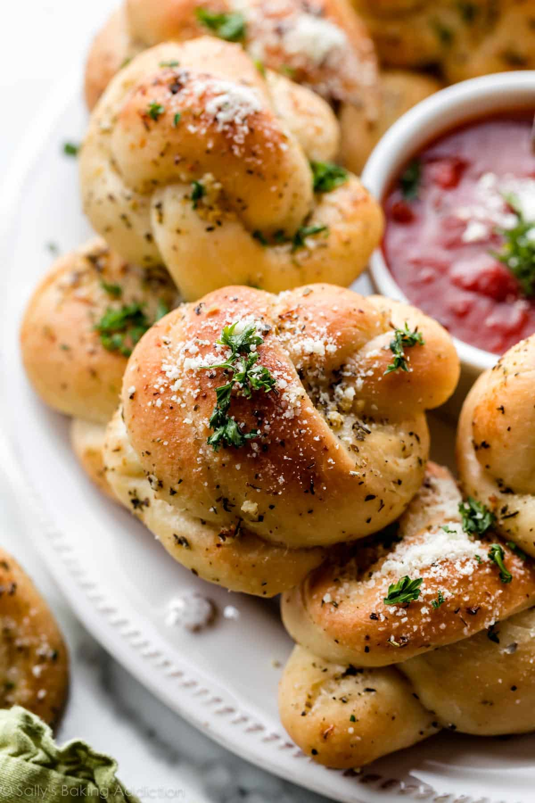

Jimmbo's Garlic Knots

This garlic knot recipe is such a hit. Your guests will keep asking for more of Jimmbo's garlic knots!
Ingredients
- 1 (10 ounce) can refrigerated pizza crust dough
- ⅓ cup olive oil
- 6 tablespoons finely chopped fresh garlic
- 5 tablespoons grated Parmesan cheese
- 3 tablespoons chopped fresh parsley
- 1 teaspoon crushed red pepper
- 1 teaspoon salt
How to Make Garlic Knots Step-by-Step
- Preheat the oven to 450 degrees F (230 degrees C).
- Roll out pizza dough to form a 10x16-inch sheet of dough. Cut sheet into 3/4-inch parallel strips. Then cut
these strips in half, making about 24 pieces. Tie each strip into a knot and place them close together on a greased pan.
- Bake in the preheated oven until golden brown.
- Immediately transfer hot knots to a large bowl and drizzle with olive oil. Sprinkle with garlic, cheese, parsley, red pepper, and salt.
Toss well and serve.